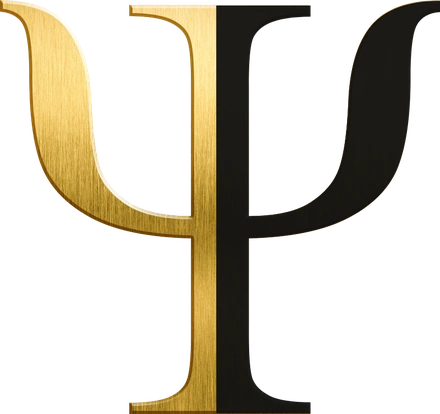

01Creativity
The founder is the company.
→ crisis of leadership

It looks like we read their mind. It’s the model reading the data.
The magic is real and the mechanism is honest. PsikiQ makes you look psychic because the engine surfaces the pattern you’d feel but couldn’t prove — then hands you the words, the timing, and the person who’s ready to move.
The diagnostic reads it. Five phases of growth, each one ending in the exact crisis that forces the next. Where a business sits on that curve decides what it will buy, what it will ignore, and what it is already desperate for — long before anyone inside it can say so out loud. It returns a prognosis — not what you have, but the crisis already forming in front of you.
The founder is the company.
Someone finally runs it.
The middle takes weight.
Systems hold it together.
The org outgrows its rules.
Not a score out of ten. A position on a curve, with the next crisis already forming in front of it. A position tells you what to do. A score just tells you how you did.
Every question says what it is establishing and why that matters. The instrument teaches while it measures — which is exactly why people finish it, and why they trust the read at the end.
Growth runs on motivations nobody states out loud. The sequence surfaces the scaffolding underneath the stated goal, then hands you the language that meets it.
Showcase in the literal sense: what you run is a live engine, not a demo of one — the same instrument we build into a client’s business, pointed at yours for eight minutes. Look under the chassis →
The read runs on ELENCHUS — the questioning engine under PsikiQ. Named for the Socratic elenchus: the cross-examination that collapses a belief its holder did not know was false. That is not a flourish, it is the method. Not a scoring sheet with a good front end — this is the movement, and every figure below is the one it is running right now.
Every read returns its own confidence, and says so when it can only give you the coarse one.
Three diagnostics run. Three collapses. The official versions land within weeks — in one case, days. Mark our words.
One diagnostic on your market. We’ll show you the blue ocean hiding inside your red one — the gap, made visible. No pitch.
ψ Book the diagnostic